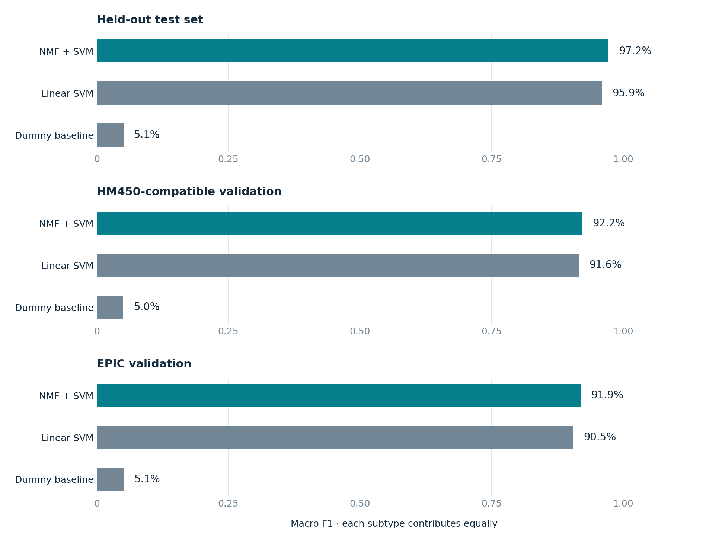
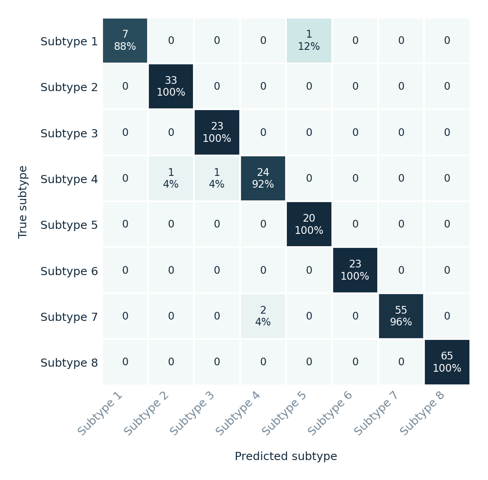
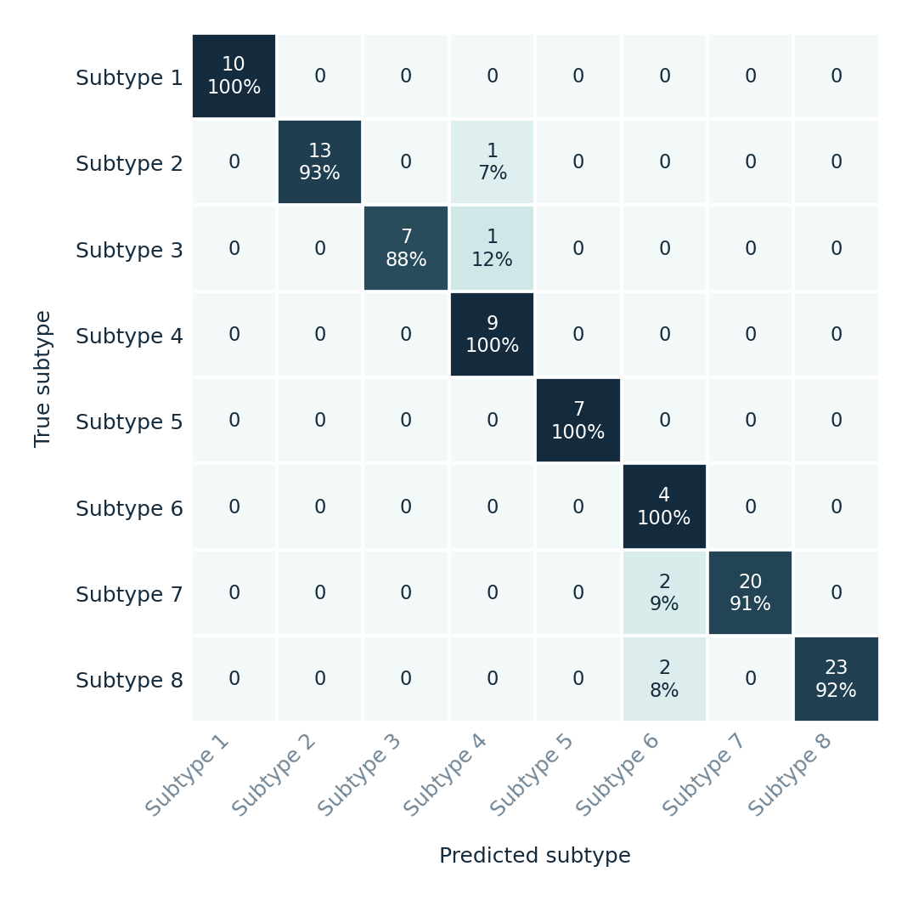
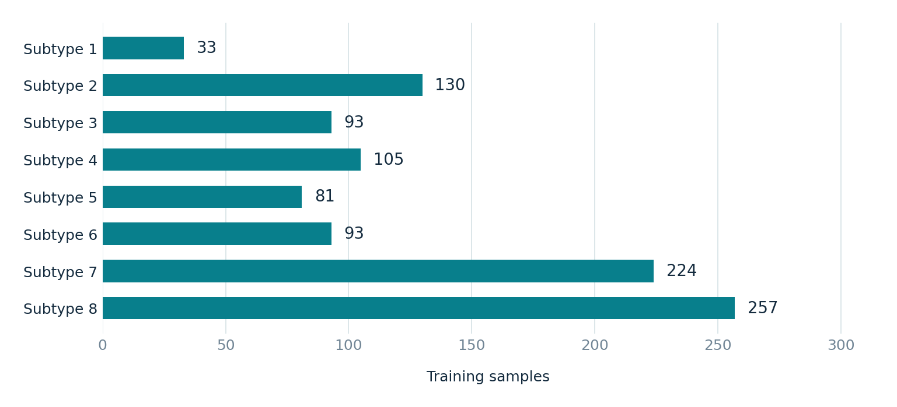

Computational oncology / Research portfolio
Medulloblastoma
methylation classification.
A reproducible comparison of dimensionality reduction, support vector machines, and a baseline for Group 3/4 molecular subtype prediction.
Research benchmark on prepared cohort inputs. These results describe classification using supplied representations and subtype labels. Upstream preparation limits how strongly the scores can support independent generalization; see the provenance and validation notes below.
Training CV macro F1: 97.4%
Held-out test · equal weight per subtype
95% CI: 95.5%–99.2%
1,016 training samples · Prepared cohort benchmark
01 / Model comparison
Performance across evaluation splits
Model selection uses training cross-validation. Held-out and validation scores assess the selected model after tuning and are reported alongside the alternatives.

| Model | Evaluation split | Samples | Accuracy | Balanced acc. | Macro F1 | Accuracy 95% CI |
|---|---|---|---|---|---|---|
| NMF + SVMCV selected | Held-out test set | 255 | 98.0% | 97.0% | 97.2% | 95.5%–99.2% |
| NMF + SVMCV selected | HM450-compatible validation | 99 | 93.9% | 95.4% | 92.2% | 87.4%–97.2% |
| NMF + SVMCV selected | EPIC validation | 97 | 93.8% | 95.2% | 91.9% | 87.2%–97.1% |
| Linear SVM | Held-out test set | 255 | 97.6% | 95.3% | 95.9% | 95.0%–98.9% |
| Linear SVM | HM450-compatible validation | 99 | 93.9% | 92.6% | 91.6% | 87.4%–97.2% |
| Linear SVM | EPIC validation | 97 | 92.8% | 92.6% | 90.5% | 85.8%–96.5% |
| Dummy baseline | Held-out test set | 255 | 25.5% | 12.5% | 5.1% | 20.5%–31.2% |
| Dummy baseline | HM450-compatible validation | 99 | 25.3% | 12.5% | 5.0% | 17.7%–34.6% |
| Dummy baseline | EPIC validation | 97 | 25.8% | 12.5% | 5.1% | 18.1%–35.3% |
Accuracy measures total correct predictions. Balanced accuracy averages subtype recall; macro F1 balances precision and recall with equal subtype weighting. Confidence intervals describe sampling uncertainty in accuracy, not the effect of upstream preprocessing or dataset shift.
02 / Selected model
Where the classifier succeeds and struggles
Confusion matrices for NMF + SVM. Darker diagonal cells indicate correct classification within a subtype; off-diagonal counts show errors.
Held-out test set

HM450-compatible validation

EPIC validation
Held-out test set · subtype metrics
| Subtype | Precision | Recall | F1 | Support |
|---|---|---|---|---|
| Subtype 1 | 100.0% | 87.5% | 93.3% | 8 |
| Subtype 2 | 97.1% | 100.0% | 98.5% | 33 |
| Subtype 3 | 95.8% | 100.0% | 97.9% | 23 |
| Subtype 4 | 92.3% | 92.3% | 92.3% | 26 |
| Subtype 5 | 95.2% | 100.0% | 97.6% | 20 |
| Subtype 6 | 100.0% | 100.0% | 100.0% | 23 |
| Subtype 7 | 100.0% | 96.5% | 98.2% | 57 |
| Subtype 8 | 100.0% | 100.0% | 100.0% | 65 |
HM450-compatible validation · subtype metrics
| Subtype | Precision | Recall | F1 | Support |
|---|---|---|---|---|
| Subtype 1 | 100.0% | 100.0% | 100.0% | 10 |
| Subtype 2 | 100.0% | 92.9% | 96.3% | 14 |
| Subtype 3 | 100.0% | 87.5% | 93.3% | 8 |
| Subtype 4 | 81.8% | 100.0% | 90.0% | 9 |
| Subtype 5 | 100.0% | 100.0% | 100.0% | 7 |
| Subtype 6 | 50.0% | 100.0% | 66.7% | 4 |
| Subtype 7 | 100.0% | 90.9% | 95.2% | 22 |
| Subtype 8 | 100.0% | 92.0% | 95.8% | 25 |
EPIC validation · subtype metrics
| Subtype | Precision | Recall | F1 | Support |
|---|---|---|---|---|
| Subtype 1 | 100.0% | 100.0% | 100.0% | 10 |
| Subtype 2 | 100.0% | 92.9% | 96.3% | 14 |
| Subtype 3 | 100.0% | 85.7% | 92.3% | 7 |
| Subtype 4 | 80.0% | 100.0% | 88.9% | 8 |
| Subtype 5 | 100.0% | 100.0% | 100.0% | 7 |
| Subtype 6 | 50.0% | 100.0% | 66.7% | 4 |
| Subtype 7 | 100.0% | 90.9% | 95.2% | 22 |
| Subtype 8 | 100.0% | 92.0% | 95.8% | 25 |
03 / Data context
The sample structure behind the scores
Subtype labels describe molecular subtypes within Group 3/4 medulloblastoma. Counts and validation relationships matter when interpreting performance.

| Split and subtype counts | Samples |
|---|---|
| Training setSubtype 1: 33 · Subtype 2: 130 · Subtype 3: 93 · Subtype 4: 105 · Subtype 5: 81 · Subtype 6: 93 · Subtype 7: 224 · Subtype 8: 257 | 1,016 |
| Held-out test setSubtype 1: 8 · Subtype 2: 33 · Subtype 3: 23 · Subtype 4: 26 · Subtype 5: 20 · Subtype 6: 23 · Subtype 7: 57 · Subtype 8: 65 | 255 |
| HM450-compatible validationSubtype 1: 10 · Subtype 2: 14 · Subtype 3: 8 · Subtype 4: 9 · Subtype 5: 7 · Subtype 6: 4 · Subtype 7: 22 · Subtype 8: 25 | 99 |
| EPIC validationSubtype 1: 10 · Subtype 2: 14 · Subtype 3: 7 · Subtype 4: 8 · Subtype 5: 7 · Subtype 6: 4 · Subtype 7: 22 · Subtype 8: 25 | 97 |
Paired validation representations
The two validation representations contain 97 matched tumors. The selected model gives the same prediction for 100.0% of matched pairs. Agreement measures prediction consistency; it does not establish correctness.
HM450-compatible and EPIC validation scores must not be combined as independent evidence: they represent the same tumors in prepared platform representations.
- Prepared cohort benchmark; the upstream 22,892-probe curation is inherited.
- Only specimen IDs are reused from the legacy training panel; its probes are discarded.
- Validation sets are paired representations of overlapping tumors, not independent cohorts.
- All 99 labeled EPIC metadata IDs are reserved, including two without EPIC measurements.
- These historical assessment splits support retrospective evaluation, not a new untouched test.
04 / Reproducibility & interpretation
A transparent experimental workflow
The report records aggregate results from a seeded run. It is generated directly from metrics.json and uses local figures, so it can be read offline.
Inspect prepared inputs
Check the feature matrix, subtype labels, sample counts, and split relationships before fitting classifiers.
Tune on training data
Compare the baseline and SVM pipelines using cross-validation. Select the model by macro F1, with transformations fitted within the modeling pipeline.
Evaluate and document
Report held-out and validation metrics, subtype errors, accuracy uncertainty, and paired-representation agreement where available.
Selected model parameters
{
"classifier__C": 0.1,
"classifier__kernel": "linear",
"nmf__n_components": 15
}Research use only. This project is an educational research benchmark. It is not a validated diagnostic tool, and its predictions must not guide clinical decisions. Independent validation with a fully specified preprocessing workflow would be required for stronger generalization claims.